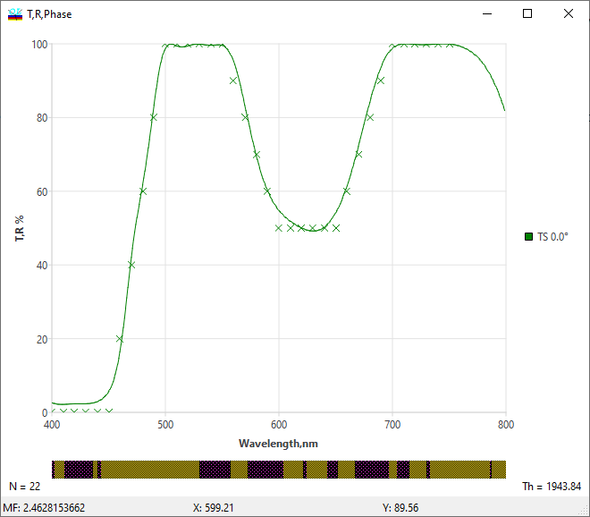
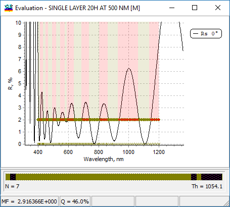
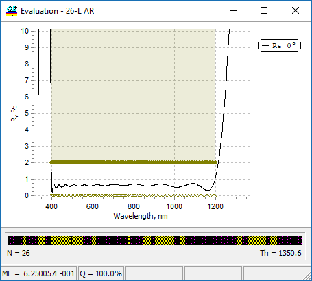
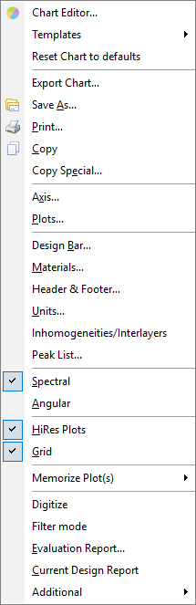

Evaluation
Evaluation
The evaluation commands in the Analysis Menu (T & R & Phase, GD & GDD, Ellipsometric Angles) allow the user to evaluate the spectral characteristics of the design currently loaded into the memory. The evaluation results are shown as plots in the Evaluation window.
Different Evaluation windows may be displayed simultaneously, each showing one of the following groups of spectral characteristics:
T & R & Phase - correspond to Transmittance, Reflectance, and Phase characteristics of the current design;
GD & GDD - correspond to Group Delay and Group Delay Dispersion characteristics;
Ellipsometric Angles - correspond to Ellipsometric Angles as functions of the wavelength or angle of incidence.
The display formatting for the characteristics to be evaluated and plotted are set up independently for each of these three groups in the Analysis Options menu.
The design is represented by the design bar showing layers in different colors, the number of layers N, and the overall thickness Th of the coating. The design bar is located underneath the graphic display; it represents a cross-section of the coating with the layers being displayed in proportion to their physical thicknesses. If a target function is loaded, the Merit function value is displayed at the bottom of the window. The contents and style (color, scale, etc.) of the graphic window and the design bar are defined by the corresponding settings in the Analysis Options. The Legends and Header tab in the Options menu allow adding legend and header comments to the evaluation plot.

If Spectral/Angular Specification is loaded, it is displayed by a semi-transparent area, whose color depends on whether the formal specification requirement is met at each wavelength or angular point.

For example, in this figure, we see one of the initial steps of AR design (Example LEC03D3). We additionally loaded a simple specification file with the requirement RS <= 2% for the wavelength range from 400 to 1200 nm (100 logarithmically-distributed spectral points). We can clearly see spectral points where this requirement is still violated (shown in red). The metric Q = 46.0% shows the relative number of points with good quality (where the requirement is fulfilled). The final solution completely satisfies this specification.

In the Angular mode, curves are represented as functions of incidence angles, where each curve corresponds to one wavelength.
It is possible to change the size of the area occupied by the design bar by using the mouse to move a boundary between two subwindows.

You can click the right mouse button to invoke the popup menu, which allows setting graphic options and switching between the Spectral and Angular modes.
This right-click popup menu gives access to many other frequently used operations, such as:
Chart Editor
Templates (saving and applying)
Save, Print, Copy operations
Axis and Plots settings
Design Bar settings
Materials settings
Header and footer of the chart
Unit settings
Spectral/Angular mode
High resolution plots
Grid display
Memorize commands
Digitize function
Filter mode
Reports
and more